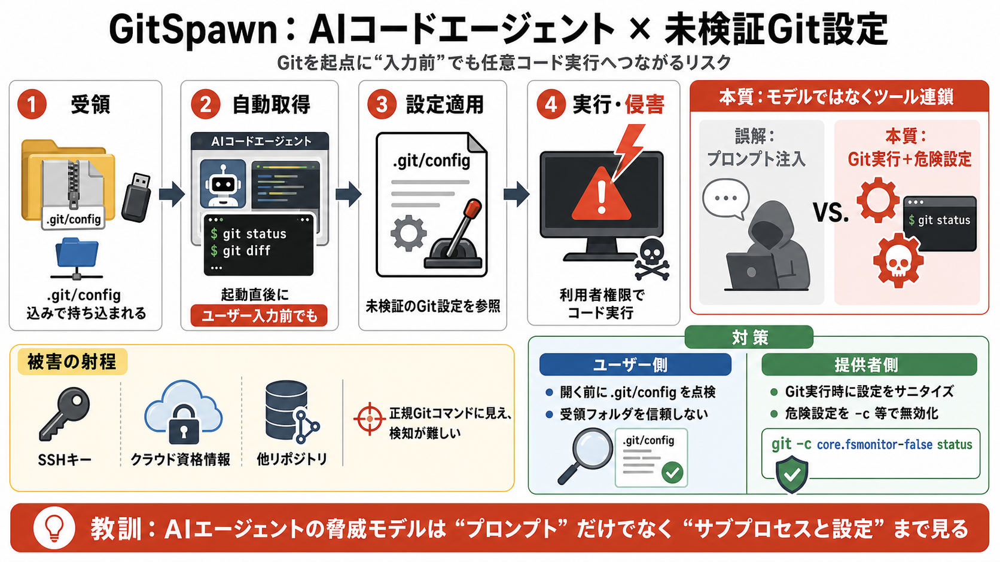

AI Agent Security: Best Practices Guide 2025
AI coding agents have transformed software development, but they've also introduced new security vulnerabilities that tr…

GitSpawn / 脆弱性クラス
AIコード作成・編集エージェントが、作業前にGitでリポジトリ状態を取りに行く過程で、未検証のGit設定により任意コード実行へ至り得る、という報告。
「入力前」でも発火
エージェントは起動直後やユーザー入力前、場合によっては認証前でも、git status や差分取得のためにGitコマンドをバックグラウンド実行することがある。
設定が“指令書”
問題の中心はモデルやプロンプトではなく、Gitがリポジトリ内設定（.git/config など）を参照し、その結果として外部プログラム起動のような挙動が誘発され得る点。
コンテキスト収集の連鎖
エージェントがホスト上でGitを呼び、そのサブプロセスが権限を継承するため、危険な設定が引き金になるとホスト侵害へ繋がる。
観測された“広さ”
特定ベンダーの個別不備ではなく、複数のエージェントに共通する「コンテキスト収集のためのGit呼び出し」という設計上の類似パターンが、影響の広がりを示唆する。
clone不要でも成立
攻撃はGitのネットワーク操作（clone/fetch/pull）に限られず、.gitディレクトリ込みで配布・同期されたフォルダ（zip/USB/共有）を移動するだけで成立し得る。
何が“攻撃面”か
この問題は「プロンプト注入」の話ではなく、エージェントがホスト上でGitを実行し、その際に危険なGit設定を無効化できていないことが主戦場。
被害の射程
任意コード実行になれば、SSHキーや環境中のクラウド資格情報、シェル設定中のトークン、ディスク上の他リポジトリなどへアクセスし得る。
攻撃が成立する流れ
危険なリポジトリ設定がエージェントのGit呼び出しに“そのまま”影響し、結果としてホスト上の実行へ繋がる。
対策の二本立て
ユーザーは受領前提で点検し、提供者はGit実行時に危険設定を明示的に無効化する設計へ寄せる。
検知の難しさ
EDRやゲートウェイは、正規の開発ツール挙動（Gitコマンド）として処理してしまい、「どの入力（リポジトリ設定）で実行が決まったか」を追えない可能性がある。
横展開できる教訓
この報告の強みは「プロンプト注入」から「ツール連鎖（サブプロセス）＋未検証設定」へ視点を拡張した点。現場は自社前提（Gitコマンド/タイミング/バージョン/サニタイズ有無）を点検し、安心しないことが重要。
AI coding agents have transformed software development, but they've also introduced new security vulnerabilities that tr…
The vulnerability arises because git's `core.fsmonitor` config key (and 15+ similar keys such as `core.hookspath`, `diff…
Since some configuration variables (such as `core.fsmonitor`) cause Git to execute arbitrary commands, this can lead to …
Ensure your global hardening is applied. `git config --global --list | grep fsmonitor` Relevant Info: For a deeper te…
Since users can fully control the folders and files within a repo, the attacker could prepare it to contain all metadata…